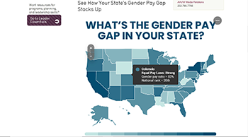

The Gender Pay Gap By State
The snippet shown is not the top of the landing page but it is the interactive element that most relates to my topic. The landing screen does not have a call to action and the navigation bar is split into a regular bar and column that divides the user’s attention. The rest of the page is written like an article except for the interactive map. Upon hovering on any state, a popup appears giving information on the state name, the strength of the equal pay laws, the gender pay ratio, and the state’s national rank in closing the wage gap. The color coding of the map helps identify which states fall into similar groups and therefore similar hierarchies of progress on the wage gap. This part of the page has good user experience and is easy to use.